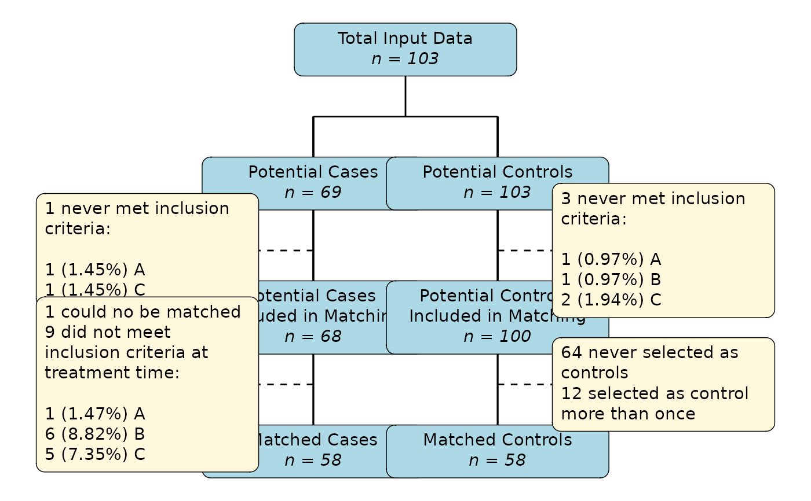

Plot a flowchart of the sample size flow in a match_time object
plot_flowchart.RdThis function is an attempt at creating a CONSORT style flowchart for the sequential time-dependent matching methods implemented in this package. It shows the number of potential cases and potential controls as filtered throughout the matching process. Some of the included numbers may seem confusing at first glance. See details for more information.
Usage
plot_flowchart(
x,
digits=2,
n_fontface="italic",
inclusion_text=NULL,
remove_0_lines=TRUE,
remove_0_boxes=FALSE,
perc_inclusion=TRUE,
perc_inclusion_total=FALSE,
perc_other=FALSE,
perc_type="all",
number_format=format,
box_main_style="n_last",
box_main_text=list(),
box_main_halign=0.5,
box_main_nudge_x=0,
box_main_nudge_y=0,
box_main_padding=ggplot2::unit(c(5.5, 5.5, 5.5, 5.5), "pt"),
box_main_margin=ggplot2::unit(c(0, 0, 0, 0), "pt"),
box_main_r=ggplot2::unit(5.5, "pt"),
box_main_width=ggplot2::unit(2, "inch"),
box_main_minwidth=NULL,
box_main_maxwidth=NULL,
box_main_height=NULL,
box_main_minheight=NULL,
box_main_maxheight=NULL,
box_main_colour="black",
box_main_fill="lightblue",
box_sec_text=list(),
box_sec_halign=0,
box_sec_nudge_x=box_main_nudge_x,
box_sec_nudge_y=box_main_nudge_y,
box_sec_padding=box_main_padding,
box_sec_margin=box_main_margin,
box_sec_r=box_main_r,
box_sec_width=box_main_width,
box_sec_minwidth=box_main_minwidth,
box_sec_maxwidth=box_main_maxwidth,
box_sec_height=box_main_height,
box_sec_minheight=box_main_minheight,
box_sec_maxheight=box_main_maxheight,
box_sec_colour=box_main_colour,
box_sec_fill="cornsilk",
line_main_colour="black",
line_main_linetype="solid",
line_main_linewidth=0.5,
line_sec_colour=line_main_colour,
line_sec_linetype="dashed",
line_sec_linewidth=line_main_linewidth,
arrow=TRUE,
arrow_type="closed",
arrow_angle=30,
arrow_vjust=-0.4,
arrow_size=0.1,
xlim=c(-20, 20),
ylim=c(-6, 11),
...
)Arguments
- x
A
match_timeobject created using thematch_timefunction.- digits
A single integer, specifying the number of digits the percentages should be rounded to.
- n_fontface
Either
TRUEorFALSE, specifying whether the "n = X" texts in the main boxes should be"normal","italic","bold"or"bolditalic".- inclusion_text
A named list specifying the text that should be used for the exclusion criteria reasons. This list should contain only names that have been used as inclusion criteria in the
inclusionargument of thematch_timefunction.- remove_0_lines
Either
TRUEorFALSE, specifying whether lines about 0 occurrences should be removed from the secondary boxes.- remove_0_boxes
Either
TRUEorFALSE, specifying whether boxes that are basically empty because of 0 occurrences should be removed from the plot.- perc_inclusion
Either
TRUEorFALSE, specifying whether percentages should be shown for the individual exclusion criteria reasons. What these percentages use as reference can be controlled using theperc_typeargument.- perc_inclusion_total
Either
TRUEorFALSE, specifying whether percentages should be shown for total numbers of individuals excluded because of the inclusion criteria.- perc_other
Either
TRUEorFALSE, specifying whether percentages should be shown for all numbers in the side-boxes that are not related to the inclusion criteria.- perc_type
A single character string controlling what the calculated percentages for the inclusion criteria items should be in reference to. If
"all", the percentages will be in reference to the previous main box, e.g. the percentage of people not fulfilling the inclusion criteria X out of all people it was applied to. If"excluded"the percentage will be in reference to the number of individuals excluded due to the inclusion criteria instead.- number_format
A function that can be called on a vector of numbers and outputs those numbers as strings in some form. This can be used to ensure that the same number of digits is shown regardless of number, or to break up large numbers with commas or points. Defaults to the
formatfunction. Further arguments to this function may be passed through the...syntax.- box_main_style
A single character string, controlling which "style" the text in the main boxes should have. Should be either
"n_first", in which case the numbers appear before the text, or"n_last"in which the numbers appear after the text (default).- box_main_text
A named list of single character strings, specifying alternative text to the defaults printed in the main boxes. The names of the list should be one of
"box1"(defining the text in the first box from the top),"box2l"(defining the text in the second box from the top on the left),"box2r"(defining the text in the second box from the top on the right),"box3l"(defining the text in the third box from the top on the left),"box3r"(defining the text in the third box from the top on the right),"box4l"(fourth box on the left),"box4r"(fourth box on the right). Set tolist()to not change the text (default).- box_main_halign
Passed to the
halignaesthetic in thegeom_textboxfunction used for the main boxes.- box_main_nudge_x
Passed to the
nudge_xargument in thegeom_textboxfunction used for the main boxes.- box_main_nudge_y
Passed to the
nudge_yargument in thegeom_textboxfunction used for the main boxes.- box_main_padding
Passed to the
box.paddingargument in thegeom_textboxfunction used for the main boxes.- box_main_margin
Passed to the
box.marginargument in thegeom_textboxfunction used for the main boxes.- box_main_r
Passed to the
box.rargument in thegeom_textboxfunction used for the main boxes.- box_main_width
Passed to the
widthargument in thegeom_textboxfunction used for the main boxes.- box_main_minwidth
Passed to the
minwidthargument in thegeom_textboxfunction used for the main boxes.- box_main_maxwidth
Passed to the
maxwidthargument in thegeom_textboxfunction used for the main boxes.- box_main_height
Passed to the
heightargument in thegeom_textboxfunction used for the main boxes.- box_main_minheight
Passed to the
minheightargument in thegeom_textboxfunction used for the main boxes.- box_main_maxheight
Passed to the
maxheightargument in thegeom_textboxfunction used for the main boxes.- box_main_colour
Passed to the
box.colouraesthetic in thegeom_textboxfunction used for the main boxes.- box_main_fill
Passed to the
fillaesthetic in thegeom_textboxfunction used for the main boxes.- box_sec_text
A named list of single character strings, specifying alternative text to the defaults printed in the secondary boxes. The names of the list should be one of
"box1l"(defining the text in the first secondary box from the top on the left side),"box1r"(defining the text in the first secondary box from the top on the right),"box2l1"(defining the text for the unmatched in the second secondary box from the top on the left side),"box2l2"(defining the text for the inclusion criteria in the second secondary box from the top on the left side),"box2r1"(defining the text on how many controls were not used in the bottom right box),"box2r2"(defining the text on how many controls were used more than once in the bottom right box). Set tolist()to not change the text (default).- box_sec_halign
Passed to the
halignaesthetic in thegeom_textboxfunction used for the secondary boxes.- box_sec_nudge_x
Passed to the
nudge_xargument in thegeom_textboxfunction used for the secondary boxes.- box_sec_nudge_y
Passed to the
nudge_yargument in thegeom_textboxfunction used for the secondary boxes.- box_sec_padding
Passed to the
box.paddingargument in thegeom_textboxfunction used for the secondary boxes.- box_sec_margin
Passed to the
box.marginargument in thegeom_textboxfunction used for the secondary boxes.- box_sec_r
Passed to the
box.rargument in thegeom_textboxfunction used for the secondary boxes.- box_sec_width
Passed to the
widthargument in thegeom_textboxfunction used for the secondary boxes.- box_sec_minwidth
Passed to the
minwidthargument in thegeom_textboxfunction used for the secondary boxes.- box_sec_maxwidth
Passed to the
maxwidthargument in thegeom_textboxfunction used for the secondary boxes.- box_sec_height
Passed to the
heightargument in thegeom_textboxfunction used for the secondary boxes.- box_sec_minheight
Passed to the
minheightargument in thegeom_textboxfunction used for the secondary boxes.- box_sec_maxheight
Passed to the
maxheightargument in thegeom_textboxfunction used for the secondary boxes.- box_sec_colour
Passed to the
box.colourargument in thegeom_textboxfunction used for the secondary boxes.- box_sec_fill
Passed to the
fillargument in thegeom_textboxfunction used for the secondary boxes.- line_main_colour
The colour of the main lines connecting the main boxes.
- line_main_linetype
The type of the lines connecting the main boxes.
- line_main_linewidth
The width of the lines connecting the main boxes.
- line_sec_colour
The color of the lines connecting the secondary boxes to the main lines.
- line_sec_linetype
The type of the lines connecting the secondary boxes to the main lines.
- line_sec_linewidth
The width of the lines connecting the secondary boxes to the main lines.
- arrow
Either
TRUEorFALSE, specifying whether to draw arrows on the main lines.- arrow_type
The angle of the arrow head in degrees (smaller numbers produce narrower, pointier arrows). Essentially describes the width of the arrow head. Ignored if
arrow=FALSE.- arrow_angle
The type of the arrow heads drawn, ignored if
arrow=FALSE.- arrow_vjust
A single number that may be used to shift the arrow heads up or down. This is probably needed in order to correctly place the arrows. If this does not work, users are encouraged to set
arrow=FALSEand add their own arrows using thegeom_segmentfunction.- arrow_size
The size of the drawn arrow heads, ignored if
arrow=FALSE.- xlim
The x limits of the plot. Should usually stay at the values given here, because the positions of the boxes are hard-coded. They can, however, be changed to allow drawing more boxes etc. To change the size of the boxes, arguments starting with
box_main_orbox_sec_should be more useful.- ylim
The y limits of the plot. See argument
xlim.- ...
Further arguments passed to the
number_formatfunction.
Details
Below are some FAQ about this type of flowchart and the function itself.
Why are the shown values so weird?
Multiple of the numbers in the resulting flowchart may seem confusing at first. First of all, the number of potential cases + the number of potential controls is (at least at first) usually much larger than the total amount of data available. The reason for this is that all individuals that do not get treated at \(t = 0\) can, theoretically, be used as control before they receive the treatment.
Similarly, sometimes some people do not meet multiple inclusion criteria at the same time, resulting in them being counted more than once in the respective list of reasons for inclusion. The percentages in parenthesis (if shown) are therefore in respect to the total number of potential controls / cases still available at time of exclusion, not to the total number of excluded individuals.
Finally, the resulting matched dataset (matched cases + matched controls) may be larger than the total input data, even if replace_over_t=FALSE and replace_at_t=FALSE. This is again because, unless replace_cases=FALSE is used, individuals used as controls may later become cases and are thus included twice in the output data. To get the number of distinct individuals in the resulting data instead, one simply needs to call length(unique(data$id)) on the final matched dataset.
How do I make all the text fit on a page?
Usually, the resulting plot will look very poorly in the lower right corner of an interactive R studio session. Only when clicking the "zoom" button, a much better version will appear. This is because the plot is usually way too big to fit in the corner. When saving to a file it therefore usually makes sense to make the width and height parameters rather large to get the same effect. Users are encouraged to play around with these parameters. Additional optimisations can be done through the various arguments relating to the boxes.
Can I add more boxes?
When using this function for a publication, it might make sense to add more boxes below the plot with additional information. This may be done using regular ggplot2 syntax. The boxes can be created using the geom_textbox function from the ggtext package. Lines and arrows are drawn simply using the geom_segment function.
Why are the arrows placed so poorly?
Because the actual width of the boxes is dependent on the size of the plot and internally the boxes and lines are independent of one another, there is no simple way to make the arrows fit right on top of the boxes naturally. Users can usually create the desired effect by changing the arrow_hjust argument through trial and error. If this fails, users may set arrow=FALSE and add their own arrows using the geom_segment function.
Value
Returns a standard ggplot2 object that can be saved with a ggsave call.
Examples
library(data.table)
library(MatchTime)
set.seed(12341234)
if (requireNamespace("survival") & requireNamespace("ggplot2") &
requireNamespace("ggplot2") & requireNamespace("ggtext")) {
library(ggtext)
library(ggplot2)
library(survival)
# load heart dataset from survival package
data("heart", package="survival")
# add some random variables that will be used as inclusion criteria
# (in reality you would already have them)
heart$A <- sample(c(TRUE, FALSE), size=nrow(heart), replace=TRUE,
prob=c(0.9, 0.1))
heart$B <- sample(c(TRUE, FALSE), size=nrow(heart), replace=TRUE,
prob=c(0.9, 0.1))
heart$C <- sample(c(TRUE, FALSE), size=nrow(heart), replace=TRUE,
prob=c(0.9, 0.1))
# perform some time-dependent matching with inclusion criteria
m_objs <- match_time(transplant ~ surgery, data=heart, id="id",
match_method="fast_exact", method="brsm",
replace_over_t=TRUE, ratio=1,
inclusion=c("A", "B", "C"))
# plot the flowchart
plot_flowchart(m_objs)
}
#> Loading required namespace: ggtext
